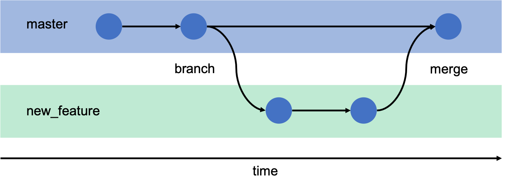
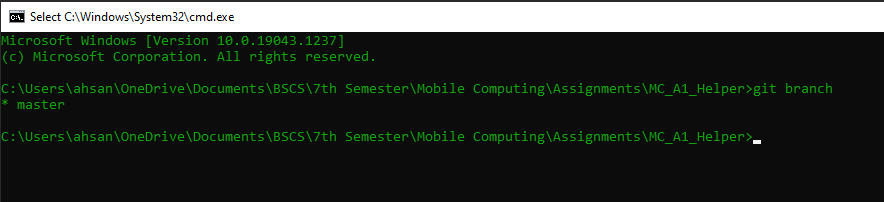
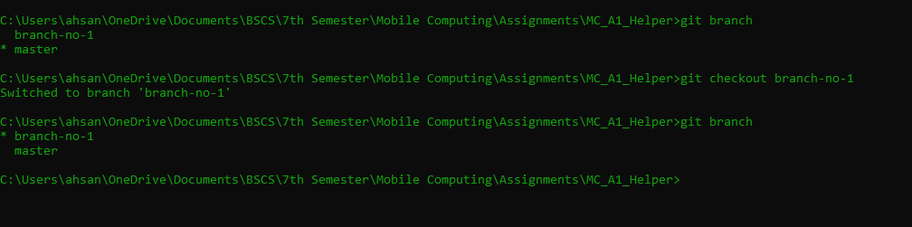

Version Control System
- Introduction
- Who should use Git?
- Git and GitHub
- Installation Guide
- git --version
- git init
- General Concept
- git status
- git add
- git commit
- git log
- git checkout
- Branches
- git branch
- GitHub
- git push
- git pull
- git clone
Introduction
Before preceding, lets find out what actually is Version Control System (VCS) and what is Git?
Simply put, version control system allows you to maintain and manage different versions of the files. It is sort of a time machine. Yes!, you read it right. Once you master the VCS you will be able to travel in time. You will be able to see what your files looked like in the past. You will be maintaining different versions of files or project for your future self. Is not it fun? So, fasten your seat belts.
Who should use Git?
You do not have to be a programmer to use Git. Anyone who works on projects and wants to maintain its different
versions, can use
You may be
- A writer who writes stories or books.
- A programmer
- A Student
- or Anyone
Git and Github
There are many Version Control Systems out there. Git is one of them. So, Git is basically a
Version Control
System. It lets you mantain different versions locally on your machine.
GitHub is a cloud storage platform where you can store your files in online repositries. You
can access them
from anywhere in the world and from any machine in the world.
Installation Guide:
| Github for Windows: | https://windows.github.com | Github for Mac: | https://mac.github.com |
Download the setup and install it on your computer.
After installing open command prompt or shell and type
git --version
You will see the following result if the installation was successfull.
Note: Your version might be
different.
Now that we have installed git, lets move towards learnin how to use it.
git init
Open the folder that contains the files, you want to manage different versions of, inside the terminal and
type
git init
Executing this command will initialize that folder as a Git repository.
General Concept
Now, suppose you are inside the repository. What will be the process?
Have a look at the image below
- Your working directory is the area where you will be working on the files.
- Then you will add this file into staging area. Here it keeps track of the changes being made.
- Then you will commit it and it's version will be stored in the local repository.

git status
This command shows the files that are being tracked and that are not being tracked.
For the files that are being tracked it also shows if any chnages have been made to them that are not
yet saved in the local repository.

git add
Files can be added in the staging area using two ways
- Add a single file
- Add all files at once
git add [file name]
adds the single file into staging area.

git add .
adds all the files and subdirectories in current directory to staging area.
Now both files are being tracked
Lets make some changes in the files

git commit
This command will move all the files in the staging area to local repository. It means it will store the
current
version.
git commit -m message
Message is a note which will help you remember what change you made in this commit.
Lets make some changes and commit them.


git log
This command shows the track of commit. It shows when the commit was made, who made the commit and commit
message.
Let say we want se how our directory looked at first commit.
For this we would have to copy the hash code of the commit and type
git checkout "commit hash code"
To swicth back to recent state, type
git checkout master
Lets learn about branches now. What are branches?
Branches enables you to make changes in the project without affecting the existing project. Sometimes you make some changes and those chnages create turbulence in the project. So, your prject becomes unstable. The only way now is to revert back but how can we do that. We will have to remember how it looked like back then. Git branches makes it way more easier for you. Master branch is the main branch. Whenever you want to make changes to your project that might make it unstable, create a branch. It copy all the files in that branch. So basically it generated a copy of the project. You can make changes in it. Whenever you think that the changes are sable you can merge the both branches otherwise you can simply switch to previous branch.
git branch
It tells you which branch you are on.

git branch [branch-name]
It will create a new branch with the specified name.
git checkout [branch-name]
Switches to the branch specified.

GitHub
Now, that we have leanred git lets move on to GitHub.
GitHub is a cloud storag platform, where you can store your repositries and can access them from anywhere.
github.com
Open the above link and create your account on GitHub.
Click on new for creating a new repository.
Enter the name and description and click create repository.
Follow these instructions to upload your local repository to GitHub.

You can see that our repository is uploaded.
You can also view commits.
How to download an existing GitHub repoitory on you local machine?
git clone
- Move to the directory you want to clone the repository in.
- Open Terminal and Enter following commands
- git init
- git clone [url of repository]

git push
As you have seen in the above snaphost, it lets you upload the local repository to online repository on GitHub.
Suppose I or someone make changes in repsoitory on GitHub. How will my local repository gets updated?
git pull
It will update the local repsoitory.